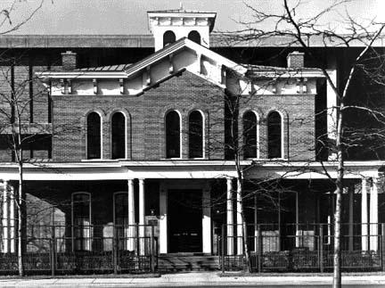
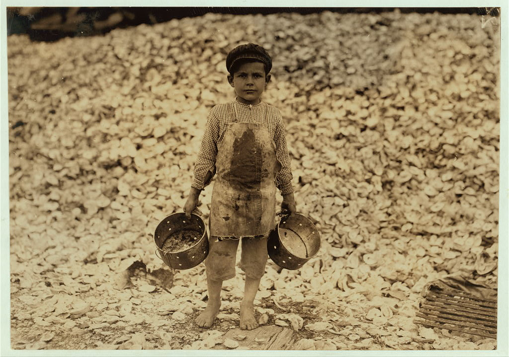
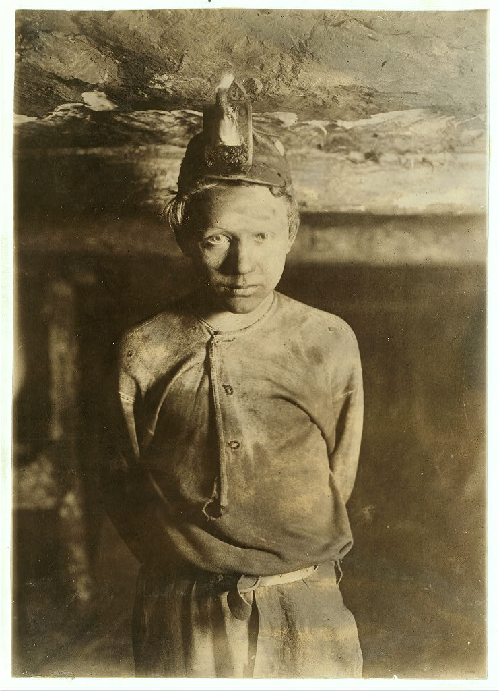
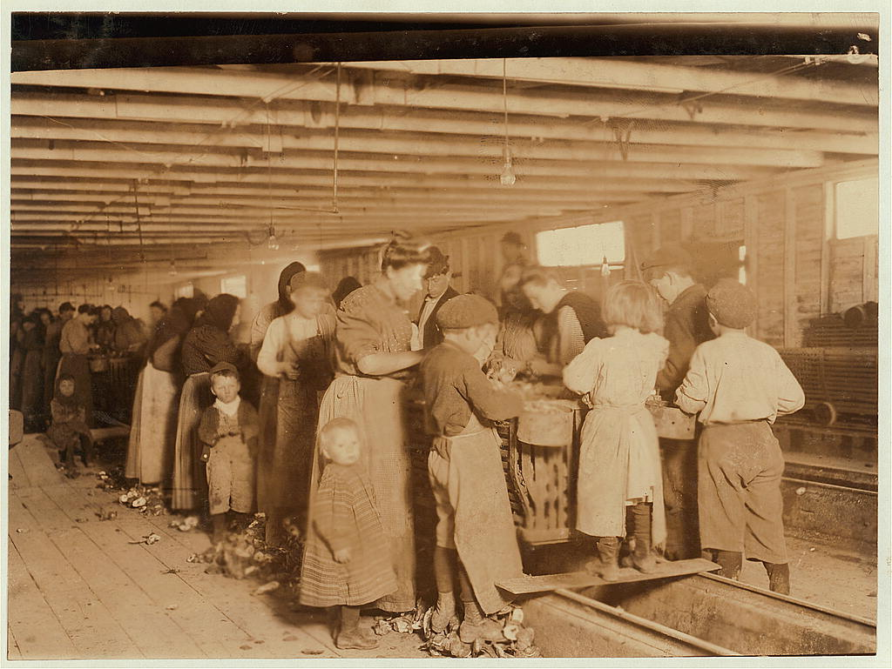

Machine politics: patronage thrives in fast-growing cities
The crucial shift: problems now look structural, not individual
If life runs through systems, reform must redesign systems.
The New Middle Class
Millions move into salaried, institution-based work between 1870 and 1920.
Older Middle Class
Shopkeepers and artisans
Independent local professionals
Status from property and reputation
New Middle Class
Clerks, managers, salesmen
Teachers, engineers, social workers
Status from salary and credentials
Education Explosion
Year
Total Enrollment
Men
Women
Total Growth Since 1869–70
1869–70
62,839
41,160
11,126
baseline
1909–10
356,510
214,926
141,584
about 467%
1919–20
597,880
314,938
282,942
about 851%
Higher Education Pipeline
College expands as professional and managerial careers grow
Credentials increasingly replace patronage as a source of authority
An elite pipeline into reform leadership and institutional administration
Women’s Higher Education
Coeducation expands at many public universities, especially in the Midwest and West
Women’s colleges grow, beginning with Vassar (1865)
Women rise from about one-fifth of students in 1869–70 to about two-fifths by 1909–10
By 1919–20, women approach near parity in overall enrollment
×
Women’s Higher Education
Vassar College (1865) was the first of the "Seven Sisters" — elite women’s colleges in the Northeast that offered women an education comparable to the all-male Ivy League.
The Timeline:
1865: Vassar founded
1870s: Public universities in the Midwest and West expand coeducation
1869–70 to 1909–10: Women rise from about 21% to about 40% of college students
1919–20: Women approach near parity in overall college enrollment
Why This Matters:
This created a generation of educated women who expected to use their education, but found many professions restricted. That frustration became fuel for reform.
The Rise of the Professions
Professionalization creates a way of thinking: expertise, standards, administration.
Professional Tools
Licensing and credentialing
Standards and best practices
Data, surveys, inspections
Bureaucratic management
Professional Hubris
Part of New Middle Class
Confident that all social problems could be solved by science and expert knowledge
Intellectuals provided the leadership for Progressivism
Two Engines of Reform
Why did Progressivism happen when it did? Historians offer two frameworks:
Frustrated Ambitions
New middle class with credentials, no outlet
Women educated but excluded from professions
Reform as alternative career path
Protestant Perfectibility
Evangelical duty to perfect society
Ministerial energy redirected toward social reform
Moral certainty as political fuel
×
Secularized Protestantism
Robert Crunden's Ministers of Reform (1982) argues that Progressivism is best understood as secularized Protestant ministry. Many leading reformers grew up in devout evangelical homes and were expected to become ministers or missionaries. Instead, they redirected that moral energy toward social reform — but the underlying impulse was the same: a conviction that society could and must be perfected.
The Postmillennial Logic:
Postmillennialism taught that Christians must build a just society on Earth to prepare for Christ's return. This made social reform feel like sacred obligation, not just good policy. The Social Gospel, the WCTU, Billy Sunday's crusades, and Bryan's political campaigns all draw from this well.
Why This Matters:
If Progressivism is secularized Protestantism, then its moral certainty — both its power and its tendency toward coercion — makes more sense. Reformers weren't just confident they were right. They believed they were doing God's work. That explains both the energy and the intolerance.
The Structural Insight
Both engines fed the same reform vehicles:
Settlement house — career path and Christian mission
Muckraking — profession and moral exposé
Social survey — science and righteous evidence
New professional associations — AMA, ABA, AHA, AEA — raised standards andexcluded. Reform absorbed the shut-out talent.
🔑 The Takeaway
Progressivism required real problems, a class with resources to act, and a moral framework that made action feel obligatory.
×
Professional Gatekeeping
Gatekeeping means controlling who gets to enter a profession. Professional associations did this by:
Setting standards: requiring specific degrees, exams, and training
Credentialing: issuing licenses and certifications
Excluding: denying membership to women and minorities
The Paradox:
These organizations genuinely improved professional quality — medical training got better, legal standards became more uniform. But they also closed ranks against women and people of color. Elizabeth Blackwell had been admitted to medical school as early as 1849, but as separate medical colleges gave way to university medical schools in the late 1800s, women actually lost ground.
Why This Matters for Progressivism:
College-educated women who couldn't join professional associations needed somewhere to direct their training and ambition. Reform movements — settlement houses, women's clubs, public health campaigns — became that outlet.
⏸️ Pause & Process
What Made Progressivism Possible?
What made progressivism possible as a movement — the problems it addressed, or the class of people with the resources to address them?
Part II
What Was Progressivism?
Defining the movement and its entry points
What Was Progressivism?
A series of political and cultural responses to industrialization and its by-products: immigration, urbanization, corporate power and class divisions.
Progressives used the power of the government to enforce their vision
The Old View
Government is the enemy of liberty
Deep American distrust of federal power
The Progressive View
Government is the protector of liberty
Rebuilding the case for government as force for good
Scaling the Template
Sanitary Reform (1870s–1890s)
Cholera, typhoid
Map disease, investigate water
Boards of health
Scope: urban
→
Progressivism (1890s–1920s)
All industrial-era problems
Muckraking, surveys, moral crusade
Agencies, laws, amendments
Scope: national
Same playbook. National scale.
Young Protestants
Religious conviction redirected toward social action:
Moral energy of ministry channeled into reform
Social Gospel — Christianity demands social justice
Billy Sunday — anti-saloon crusade as righteous warfare
William Jennings Bryan — piety and democracy inseparable
×
The Social Gospel
A movement within Protestant Christianity that argued faith required addressing social sin, not just individual sin.
Core Idea:
If social structures (low wages, unsafe housing, exploitative labor) caused suffering, then Christians had a duty to reform those structures. Building the Kingdom of God meant creating a just society on Earth.
Key Figure:
Walter Rauschenbusch, a Baptist minister whose Christianity and the Social Crisis (1907) became the movement's manifesto. He argued that individual salvation was not enough — society itself needed to be redeemed.
Why It Mattered:
The Social Gospel made Progressive reform seem like Christian duty rather than radical politics. If helping the poor was what Jesus commanded, then government intervention was morally legitimate.
Limits:
Primarily a white, Protestant movement. Catholic and African American churches developed parallel social reform traditions but faced exclusion from white Progressive networks.
Muckrakers
Investigative journalists dredging up institutional "muck":
Ida Tarbell — Standard Oil's monopoly
Lincoln Steffens — municipal corruption
George Kibbe Turner — urban prostitution
Delivery system: cheap 10-cent magazines reaching millions
🔑 The Strategy
Exposure as political tool — shock the public, demand change.
×
The Magazine Revolution
Cheap 10-cent periodicals like McClure's Magazine and Ladies' Home Journal displaced expensive 35-cent publications like Harper's and The Atlantic Monthly.
What This Changed:
Wider readership: Circulations reached 400,000 to 1 million
Receptive publishers: Sensational exposés sold copies
Why It Matters:
Muckraking wasn't just moral conviction — it was a business model. Cheap magazines created a mass audience, and publishers learned that investigative stories sold. This made reform journalism economically viable for the first time.
Settlement Houses

Hull House, Chicago, 1889
By 1910: over 400 settlement houses nationwide
Jane Addams and Ellen Gates Starr founded Hull House in 1889 — a decaying mansion surrounded by factories and tenements.
The radical idea: move in and live among the people you're helping
What settlement houses provided:
Nurseries and kindergartens
Medical clinics, Savings banks and legal aid
Employment bureaus
English classes and citizenship training
×
Hull House and Jane Addams
In 1889, Jane Addams and Ellen Gates Starr bought a decaying mansion that had once been the country home of Charles J. Hull. By then, the neighborhood was surrounded by factories, churches, saloons, and tenements inhabited by poor, largely foreign-born working-class families.
What Made Hull House Different:
Addams moved in and demanded others who worked there do the same. This wasn't charity at a distance — it was living among the people you were trying to help. The reformers studied the community from the inside.
Who Came Through Hull House:
John Dewey taught philosophy
Frank Lloyd Wright lectured on architecture
Clarence Darrow (the workingman's lawyer) spent considerable time there
The Career Path:
For college-educated women locked out of the professions, settlement houses were where they could use their training. Florence Kelley's factory investigations led to actual legislation. Julia Lathrop's research led to the U.S. Children's Bureau. The settlement house was a laboratory, a career, and a political base.
The Women's Club Network
Hundreds of thousands organized through voluntary associations:
Built libraries, playgrounds, improved schools
Expanded educational opportunities for girls
Secured tenement fire and sanitation codes
🔑 The Strategy
Made traditional female concerns — children, home — into questions of public policy.
Part III
Progressivism in Action
The politics of disgust — and the camera as weapon
The Jungle (1906)
"I aimed at the public's heart, and by accident I hit it in the stomach."
Upton Sinclair — socialist writer, seven weeks undercover in Chicago meatpacking
Intent: Expose worker exploitation
Result: Public fixated on contaminated food
Legislation passed within 6 months:
Pure Food and Drug Act (1906)
Meat Inspection Act (1906)
×
Pure Food and Drug Act (1906)
Required that food and drug labels accurately list ingredients and banned the sale of adulterated or misbranded products. Created the Bureau of Chemistry (later the FDA) to enforce standards.
Why it passed: Consumer protection crossed class lines — everyone eats. Middle-class readers of The Jungle were horrified to learn what was in their sausage.
×
Meat Inspection Act (1906)
Required federal inspection of all meat sold across state lines and mandated sanitary standards for slaughterhouses. Inspectors could reject contaminated meat before it reached consumers.
Why it passed: Direct response to The Jungle. President Theodore Roosevelt ordered an investigation that confirmed Sinclair's findings, then pushed Congress to act immediately.
Why the Stomach Won
🔑 The Analytical Center
Why did Americans respond to tainted sausage but not to crushed workers?
The cholera logic from Chapter 20:
Disease crossed class lines — could kill the rich too
Contaminated food crossed class lines — anyone could eat it
Worker exploitation stayed with workers
Whose suffering registers depends on class, race, and nativity.
Lewis Hine and the Camera as Evidence
Lewis Hine (1874–1940)
Trained sociologist — Chicago, Columbia
Hired by National Child Labor Committee (1908)
Disguised himself to infiltrate mills, mines, factories
Called it "social photography" — the camera as lever for reform
×
National Child Labor Committee
Founded in 1904 by a coalition of Progressive reformers, the NCLC was an organization dedicated to ending the exploitation of children in the American workplace. It received a charter from Congress in 1907.
The Scale of the Problem:
In 1900, the federal census counted 1.75 million children under 16 employed across the country — in mills, mines, canneries, farms, and city streets. By 1910, the number had risen to 2 million. Children worked for lower wages, had small hands suited to machinery, and couldn't organize to protect themselves.
The Strategy:
The NCLC hired investigators to gather evidence — photographs, interviews, statistics — and then organized exhibitions and published reports to dramatize children's conditions. They needed a visual weapon. That's where Lewis Hine came in.
The Results:
NCLC lobbying helped create the Children's Bureau (1912) and pass the Keating-Owen Act (1916), which set federal age minimums and hour limits. The Supreme Court struck the law down in 1918. Permanent federal protections didn't arrive until the Fair Labor Standards Act of 1938.
Newsboy, Indianapolis, 1908. Hine's shadow visible in frame.
The Children's Faces
Young spinner, Carolina cotton mill, 1908
Night Shift at the Glass Factory
Boys at midnight, glass factory, Indiana, 1908
Gulf Coast Cannery Workers

Child shrimp pickers, Biloxi, MS, 1911
Alone in the Darkness

Trapper boy, Turkey Knob Mine, WV, 1908
Field Labor in Oklahoma
Young cotton picker, Oklahoma, 1916
Over 5,100 Photographs

Child oyster shuckers, Biloxi, MS, 1911
Every one an act of evidence — and an act of courage.
Two Reformers, One Pattern
Sinclair (1906)
Medium: novel
Target: worker exploitation
Result: FDA, Meat Inspection Act
Hine (1908–1918)
Medium: photograph
Target: child labor
Result: laws struck down by courts
🔑 The Pattern — With a Twist
Sinclair's food crisis crossed class lines → fast legislation. Hine's photographs crossed class lines emotionally → but courts protected employers. Empathy alone wasn't enough.
⏸️ Pause & Process
When Does Reform Succeed?
Sinclair's novel → food safety laws passed in months.
Hine's photographs → child labor laws struck down by the Supreme Court.
Both generated public outrage. Why did one succeed and the other fail?
What does this tell you about the limits of exposure as a reform strategy?
The Legislative Scorecard
What Passed ✓
Pure Food and Drug Act (1906)
Meat Inspection Act (1906)
Children's Bureau (1912)
What Failed ✗
Keating-Owen Act — struck down 1918
Child Labor Tax Law — struck down 1922
Federal child labor law → 1938
🔑 The Progressive Formula
Reforms that stabilize capitalism (consumer protection) succeed. Reforms that challenge employer power (labor regulation) get blocked.
×
Pure Food and Drug Act (1906)
Required that food and drug labels accurately list ingredients and banned the sale of adulterated or misbranded products. Created the Bureau of Chemistry (later the FDA) to enforce standards. Passed in direct response to The Jungle and public outrage over contaminated food.
Why it passed: Consumer protection crossed class lines — everyone eats.
×
Meat Inspection Act (1906)
Required federal inspection of all meat sold across state lines and mandated sanitary standards for slaughterhouses. Inspectors could reject contaminated meat before it reached consumers. Also passed in response to The Jungle.
Why it passed: Middle-class consumers demanded safe meat after learning about industry conditions.
×
Children's Bureau (1912)
Federal agency created to investigate and report on "all matters pertaining to the welfare of children" — including infant mortality, child labor, juvenile delinquency, and mothers' pensions. Led by Julia Lathrop, a Hull House veteran. The Bureau gathered data that reformers used to lobby for state-level protections.
Why it passed: Research and data collection didn't directly threaten employer power — yet.
×
Keating-Owen Act (1916)
Banned interstate commerce in goods produced by children under 14, or by children aged 14-16 who worked more than 8 hours a day. Used Congress's power to regulate interstate commerce to indirectly regulate child labor.
Why it failed: The Supreme Court struck it down in Hammer v. Dagenhart (1918), ruling that Congress couldn't use the commerce clause to regulate local labor conditions. The Court protected employer power using liberty-of-contract doctrine.
×
Child Labor Tax Law (1919)
After the Keating-Owen Act was struck down, Congress tried a different approach: a 10% tax on profits from businesses employing children. Used Congress's taxing power instead of commerce power.
Why it failed: The Supreme Court struck it down in Bailey v. Drexel Furniture Co. (1922), ruling that Congress couldn't use taxation as a backdoor way to regulate labor. The Court again protected employers. Federal child labor regulation wouldn't succeed until the Fair Labor Standards Act of 1938.


A movement within Protestant Christianity that argued faith required addressing social sin, not just individual sin.
Core Idea:
If social structures (low wages, unsafe housing, exploitative labor) caused suffering, then Christians had a duty to reform those structures. Building the Kingdom of God meant creating a just society on Earth.
Key Figure:
Walter Rauschenbusch, a Baptist minister whose Christianity and the Social Crisis (1907) became the movement's manifesto. He argued that individual salvation was not enough — society itself needed to be redeemed.
Why It Mattered:
The Social Gospel made Progressive reform seem like Christian duty rather than radical politics. If helping the poor was what Jesus commanded, then government intervention was morally legitimate.
Limits:
Primarily a white, Protestant movement. Catholic and African American churches developed parallel social reform traditions but faced exclusion from white Progressive networks.